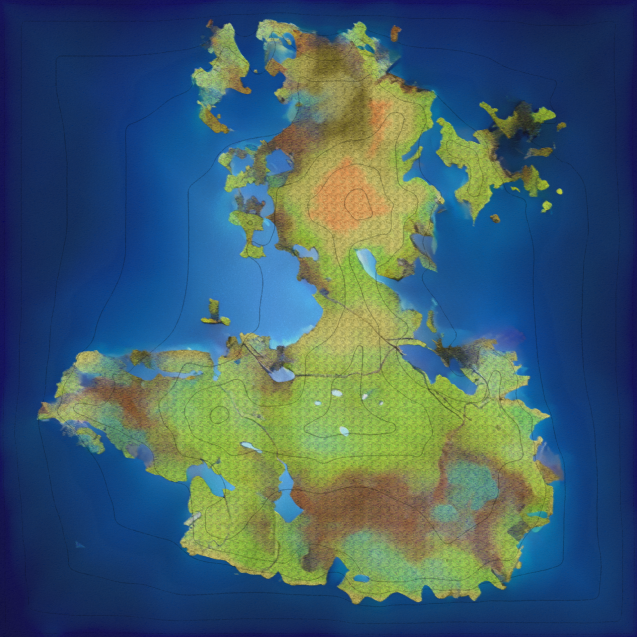

A collection of all the dumb stuff I'm working on, am planning to work on, or just want to list so I can find it later again.
Blender Addons
Game Ideas
Language
useful Links
- Back
Main
Eine Liste von Add-ons für Blender. Dies sind keine Empfehlungen, sondern eine persönliche Liste, damit ich die Add-ons wiederfinden kann, wenn ich vergesse, welche ich benutze.
- rprblender
- modular_tree-blender_28
- BlendLuxCore
- Blender-BakeLab2
- BlenderGIS
- BY-GEN
- fSpy-Blender
- TexTools
- Focal_Lock
- Texel_Density
- terrain_nodes
- BlenderMalt
- wiggle_bones
- UV-Packer
- Holt-Tools
- camera_size_presets
- DragAndDropSupport
- botaniq_free
- Biome-Reader
- blender-differential-growth
- Cavity Pass
- Modifier Shortcut Keys
- Motion Primitives
- real-camera-master
- Transfer Images
- InstantMeshesRemesh
Main
Eine Liste von Videospielideen, die ich irgendwann einmal umsetzen möchte.
MMO
Resident Evil Clone
Retro Recon
Back
Species
- (fauns + reptiles): Ilesauns
-
Humans
-
Elves
- (Great Elves)
- “Swamp” Elves
Diseases
Element classes
- Darkness
-
Light
-
Fire
-
Water
-
Earth
-
Air
-
Nature
Some Storry

I had an Idea for the story of an MMO RPG im planing on making some day. some feedback?
also if it is written weird, that's because i was to lazy to translate it properly and just used a translator:
A long time ago, there was a plague that turned various intelligent species into blood-addicted aggressive monsters.
Their bodies mutated and their bites spread the disease.
To combat this plague, warrior groups formed to hunt down and fight these demons.
In the end, the demons became a separate species that was banished to another dimension.
There they finally died out. Where the plague came from and why the demons died is veiled and or unknown.
After a long time, a person broke the seal into the world of the demons and tried to revive them.
They partially succeeded and so the artificial demons were born.
They look like a kind of hybrid between demon and the other species and are much weaker than the original demons and also can't pass on the mutations.
The artificial demons killed the person and set to work creating stronger monsters based on the research of the person who created them. Through the efforts of the Artificial Demons, the Pure Blood Demons were created, which are also artificial, but can control their mutation and pass on the disease. By control is meant that they have a demon form and a normal form.
Because there have been no demons for so long, there are only a few demon hunters left. The demons cause chaos and conflict in the world and manipulate influential people in the kingdoms and countries of the world.
Deamons
-
Blood Deamons
Mutierte Humanoide Spezies.
Erschaffen durch eine Krankheit welche sie Aggressiv und Blut-hungrig macht.
Benötigen Blut und Fleisch der Humanoides Spezies um zu überleben.
Haben ein Machtsystem bei welchem die Stärkste über die Position in der Rangortung entscheidet, um zu garantieren das immer der stärkste Dämon der Anführer ist.
Sie erhalten macht über Blut. Sollte also ein Dämon den Stärksten Dämon besiegen so erhält er seine Macht.
Andere Dämonen können durch das Blut des Anführers gestärkt und kontrolliert werden solange er noch lebt.
Mittlerweile sind Sie ausgestorben.
-
Artificial Deamons
Eine Art künstlicher hybrider Dämon welcher nur eine „Menschliche Form“ besitzt.
Sie sind generell schwach, aber intelligenter als Blut Dämonen.
-
Pure-blood Deamons
Eine Weiterentwickelung der künstlichen Dämonen welche in der Lage ist zwischen ihrer mutierten Dämonen-form und ihrer menschlichen Form zu wechseln.
Sie haben es irgendwie geschafft das Blut des Mächtigsten Blut-Dämonen zu bekommen und sind dadurch sehr stark.
Sie haben das gleiche Machtsystem. Sie haben es in die „normale“ Welt zurück geschafft und unterdrücken ihre Erschaffer.
Map

Back
keine Ahnung was ich hier reinschreiben werde, aber ich hab schon mit einer Map angefangen.
- U need to go around the village to do Quests
- the map will only be the one Village
- completing a quest earns you an item ore something like that
- some of these items can be used to start another quest
- Quests can trigger events and mini-bosses
- the further you progress with the quests, the more you can upgrade and the zombies / monsters become more difficult
- when you talk to a villager for the first time, you get a profile node of him which gives you hints on how to start his quest
Back
-
top down pixel art rpg
-
space, alien planet setting
-
some idears:
-
Oxygen management, like in Astronier
-
a building system like in Subnautica, but in 2D (?)
-
Material mining and partial automation (?)
-
multible wepons and fighting (maybe like in old Zelda games)
-
big maps
Main
Ich versuche grade meine eigene Programmiersprache zu entwickeln. Mal sehen ob das was wird.
Data types
-
Integer
- int
- i
- u
- :8
- :16
- :32
- :64
- :128
-
char
-
float
- float
- f
- :8
- :16
- :32
- :64
- :128
-
array
Examples
::foo:i:8 = 12 # var named foo type integer size 8 bit value 12 aka 00001100
!:foo2:u:8 = 12
::fooArray:[b;12] = ['H','e','l','l','o',' ','W','o','r','l','d','!']
::fooArray2:[b;12] = "Hello World!"
::fooArray3:="Hello World!" # array with length of String and type byte / char
Variables
Functions
!:foo(a:i:8):i:32{...} # function with name foo and a parameter a of type integer of size 8 and a retunvalue of type integer and size 32
Standard functions
- print() # shows a value therminal
- typeof()
Examples
!:foo:="Hello World!"
print(${foo}) # shows the value of the variable foo in the therminal
Classes
!:foo{
::foo1:i:32
::foo2:i:32
!:foof():f:32{
return self.foo1 + self.foo2
}
}
---------------------------------------------
!:foo{
::foo1:i:32
::foo2:i:32
!:foof():f:32
}
foo::foof():f:32{
return self.foo1 + self.foo2
}
complex data types
# defining a constant of type "type" which means it can now be assigned as a type
!:Vec2:type{
# constructor for initialization
# definition of possible input attributes
self(x:f:32,y:f:32){
# define behavior based on inputs on initialization
if(x != NULL)&&(y != NULL){
self x = x
self y = y
self length = pow((x*x+y*y),0.5)
}
}
#define how the complex type handles the writing and reading of its simple attributes
case{
# what to do is someone writes to an attribute
write{
x(x){
self x = x
if(self x != NULL)&&(self y != NULL){
self length = self _length(self x, self y)
}
else{return error}
}
y(y){
self y = y
if(self x != NULL)&&(self y != NULL){
self length = self _length(self x, self y)
}
else{return error}
}
length(length){
if(self x != NULL)&&(self y != NULL){
self x = self x / self length * length
self y = self x / self length * length
self length = length
}
else{return error}
}
}
#same but with reading
read{
# if u read the whole type with i.g. print()
self{
return [self x, self y]
}
x{
return self x
}
y{
return self y
}
length{
return self length
}
}
}
# method to recalculate the length of the vector
#not accessible because of the “hide” keyword
hide self!:_length(x:f:32,y:f:32):f:32{
return pow((x*x+y*y),0.5)
}
# the “primary” keyword after the “self” keyword defines the rank of the attribute
# self keyword defined as property for initialized version
# constants do not necessarily need this, unless it is always defined for the respective instance only
# constants that do not have this apply in every instance
self primary ::x:f:32
self primary ::y:f:32
self 1::length:f;32
}
::foo := Vec2(0,2)
::foo2 := Vec2(2,0)
foo.length = 1 # defines the length of the foo as 1. x changes to 0 and y to 1
foo += foo2 # because foo and foo2 are of the same type we can and them together. only “keyword” rank attributes can be influenced by operations, so x and y will be added
print(foo) #returns [2,1] to the console
Main
just a list of useful links for example for 3d art or something.